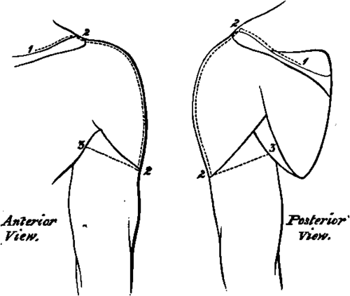

A Dissection To Expose The Anterior And Posterior Circumflex Arteries
Description
This section is from the book "A Manual Of Dissections Of The Human Body", by R. E. Carrington. Also available from Amazon: A manual of dissections of the human body.
A Dissection To Expose The Anterior And Posterior Circumflex Arteries
Position
The body supported by blocks upon the opposite shoulder to that to be dissected. The arm is to be moved backwards and forwards, and rotated outwards and inwards according as the front or back is being dissected. In making the skin incisions the shoulder is to be drawn well down.
I. Skin Incisions
1. Along the outer third of the posterior border of the Clavicle, the inner border of the Acromion process, and the upper border of the Spine of the Scapula, for two-thirds of its extent.
2. A vertical incision from the centre of the inner border of the Acromion above, over the middle of the prominence of the shoulder to the insertion of the Deltoid muscle.
3. From the lower end of No. 2, obliquely upwards and forwards to the middle of the anterior fold of the Axilla, and upwards and backwards to the centre of the posterior fold. Reflect the flaps forwards and backwards and expose the superficial fascia, and—
1. The upper surface, of the outer third of the Clavicle, and of the Acromion process.
2. The anastomosis on the Acromion between the Suprascapular, Acromio-thoracic, and Posterior Circumflex arteries.
3. A cutaneous branch of the Posterior Circumflex artery at the lower part of the posterior border of the Deltoid muscle, sending a twig downwards to the skin over the long head of the Triceps muscle.
No. 10.
4. A descending branch of the Acromio-thoracic artery between the Pectoralis major and the Deltoid muscles.
5. The Cephalic Vein also between these two muscles.
Its branch of communication over the Clavicle with the External Jugular vein may be seen at its upper part.
6. Lymphatic vessels along the Cephalic vein.
7. Passing over the Acromion process, the Supra-acromial branches of the descending cutaneous nerves of the Cervical plexus.
8. The lower branch of the Circumflex nerve passing round the posterior border of the Deltoid below the middle, and supplying the skin over the lower two-thirds of the muscle, and further giving off a twig to the skin over the long head of the Triceps muscle. Offsets of the upper branch of the nerve pass between the muscular fibres, and also turn down over the lower part of the muscle.
9. The bursa over the Acromion process.
II
Remove these structures, and the fascia lata, and expose—
1. The Deltoid muscle forming the prominence of the shoulder.
2. In front of this the outer part and insertion of the Pectoralis major muscle.
3. Below the Pectoralis major muscle the Biceps muscle is seen at its upper part. The part exposed is mainly the short head, but a small portion of the long head comes into view.
4. Behind the Deltoid muscle the Latissimus dorsi and Teres major and minor muscles are seen in part, and the Inspinatus muscle above them covered by its fascia.
5. The upper part of the external head of the Triceps muscle is exposed behind the Deltoid muscle at its lower part, running up beneath it.
6. A small twig of the Dorsalis scapulæ artery is seen posteriorly between the Teres muscles.
III
Detach the Deltoid muscle from its origin and reflect it downwards. The branches of the Posterior Circumflex artery and the accompanying nerve to its substance and on its cutaneous surface may be preserved. There will now be seen—
1. A farther portion of the Acromion, and the Coracoid process of the Scapula. The head, and greater and lesser Tuberosities of the Humerus.
2. The Coraco-acromial ligament, and the Coraco-humeral portion of the Capsule.
3. The insertions of the Supra-spinatus, Infraspinatus, and Teres minor muscles from above downwards into the great Tuberosity.
4. A small portion of the insertion of the Subscapularis muscle into the lesser Tuberosity, especially seen in the adducted position of the arm.
5. The origin of the Coraco-brachialis and short head of the Biceps muscles from the Coracoid process, and the tendon of the long head of the latter perforating the Capsular ligament.
6. A further part of the tendon of the Pectoralis major muscle passing in front of the Coraco-brachialis and short head of the Biceps muscles, and inserted into the outer Bicipital ridge.
7. A further portion of the Teres major muscle is seen behind, covering in this position the Latissimus dorsi muscle.
8. The long head of the Triceps muscle is seen posteriorly passing between the Teres major and minor muscles, the former being in front of it. The Teres major and minor muscles diverge from one another as they pass to the Humerus so as to form a triangle, of which the bone forms the base, the Teres minor muscle the upper and internal, and the Teres major muscle the lower and external boundaries. The long head of the Triceps muscle passing to the Scapula divides this triangle into two parts, an upper or external part quadrilateral in shape, and a lower or internal triangular. 9. The Posterior Circumflex artery and vein, passing through the quadrilateral space.
10. The Anterior Circumflex artery with its vein, passing beneath the Coraco-brachialis and Biceps muscles, winding round the neck of the Humerus and anastomosing with the posterior artery.
11. The Circumflex nerve accompanying the Posterior Circumflex artery.
12. The bursa between the Subscapularis muscle and the Acromion.
IV
a. Cut through the Pectoralis major in front at the point of its appearance from beneath the reflected skin, and turn it outwards.
b. Divide the Coraco-brachialis and short head of the Biceps muscles, and turn them downwards. The Musculo-cutaneous nerve will be carried with the former muscle.
c. Divide the long tendon of the Biceps muscle, and with it the aponeurotic process from the tendon of the Pectoralis major muscle to the great Tuberosity. Open up the sheath of the tendon.
d. Remove the fascia and fat and glands from the upper part of the Axillary space, dissecting out the various structures met with. There will now be exposed—
1. The Pectoralis minor muscle in front, attached to the Coracoid process.
2. The Subscapularis muscle more fully. It is seen to hide the Teres minor muscle when looked at from the front, and to take the place of this muscle in the boundaries of the quadrilateral and triangular spaces on the anterior aspect.
3. The insertions of the Latissimus dorsi and Teres major muscles, the former attached to the floor and the latter to the inner ridge of the Bicipital groove.
4. The upper part of the internal head of the Triceps muscle below the Teres major muscle.
5. The third portion of the Axillary artery, and its branches—viz., the Subscapular, which is seen running downwards on the Subscapular muscle, giving the Dorsalis Scapulæ branch through the triangular space. The Anterior Circumflex is hidden by the Median nerve at its origin, and also by the Musculocutaneous nerve, but this has been pulled down with the Coraco-brachialis muscle ; the artery is seen in all the rest of its course, and a branch running up the Bicipital groove to the joint, may be traced. The Posterior Circumflex branch is hidden at its origin by the nerves on the inner side of the artery to be mentioned immediately, and by the Axillary vein, but it may be seen passing backwards through the quadrilateral space. The Long Thoracic branch of the second portion of the Axillary trunk may be seen descending along the outer border of the Pectoralis minor muscle. An External Mammary branch may be seen sometimes crossing the centre of the space, arising from the third part of the main trunk.
6. The Axillary vein is seen internal to the artery, receiving radicles corresponding to the above-named branches of the latter.
7. The Median and Musculocutaneous nerves are outside the artery, the latter gives branches to the Coraco-brachialis muscle before piercing it.
8. The Internal Cutaneous nerve is superficial to it.
9. The Ulnar, inner head of Median, and lesser Internal Cutaneous nerves are internal to the artery.
10. The Intercosto-humeral nerve passes out from the second intercostal space lower down, and communicates by a cross branch with the lesser Internal Cutaneous nerve.
11. The Musculo-spiral nerve is behind the artery. The origin of its Internal Cutaneous branch is seen.
12. The Circumflex nerve is also behind the artery, accompanying the Posterior Circumflex artery.
13. The Subscapular nerves to the Teres major and Latissimus dorsi muscles may be seen passing down to their respective muscles.
V
a. Divide the Axillary vein, and turn the ends inwards and outwards.
b. Hook upwards the Median nerve. This exposes the origin of the Anterior Circumflex artery.
c. Hook downwards the Ulnar, both Internal Cutaneous and the Musculo-spiral nerves. The origin of the Posterior Circumflex artery will now be uncovered.
Both the Circumflex arteries may now be seen in their entire distribution.
Continue to:
- prev: A Dissection To Expose The Vena Azygos Major
- Table of Contents
- next: A Dissection To Expose The Musculo-Spiral Nerve